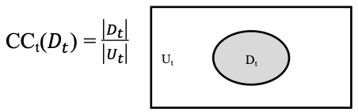
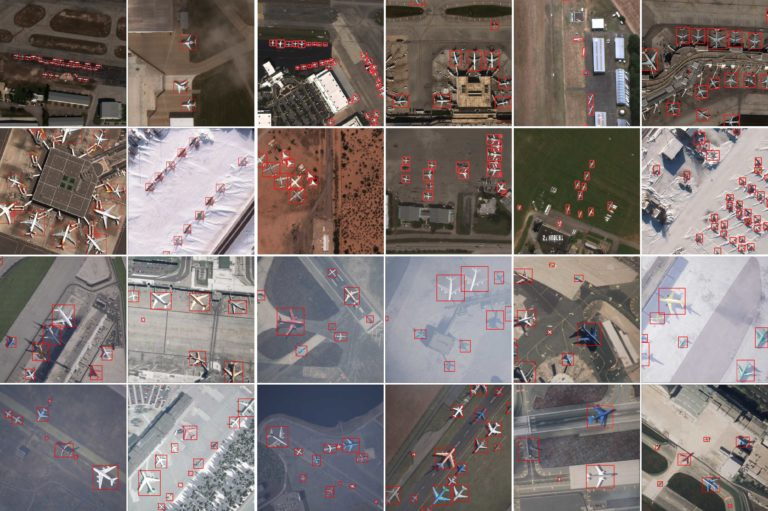
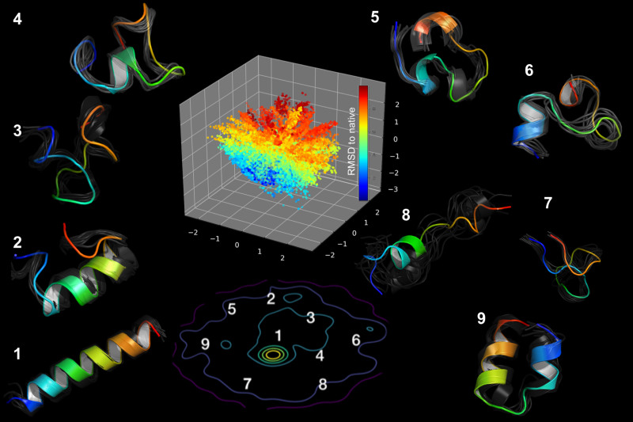
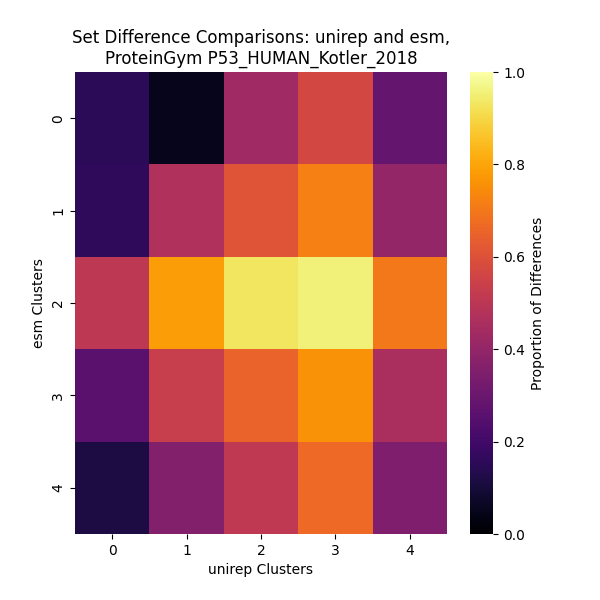
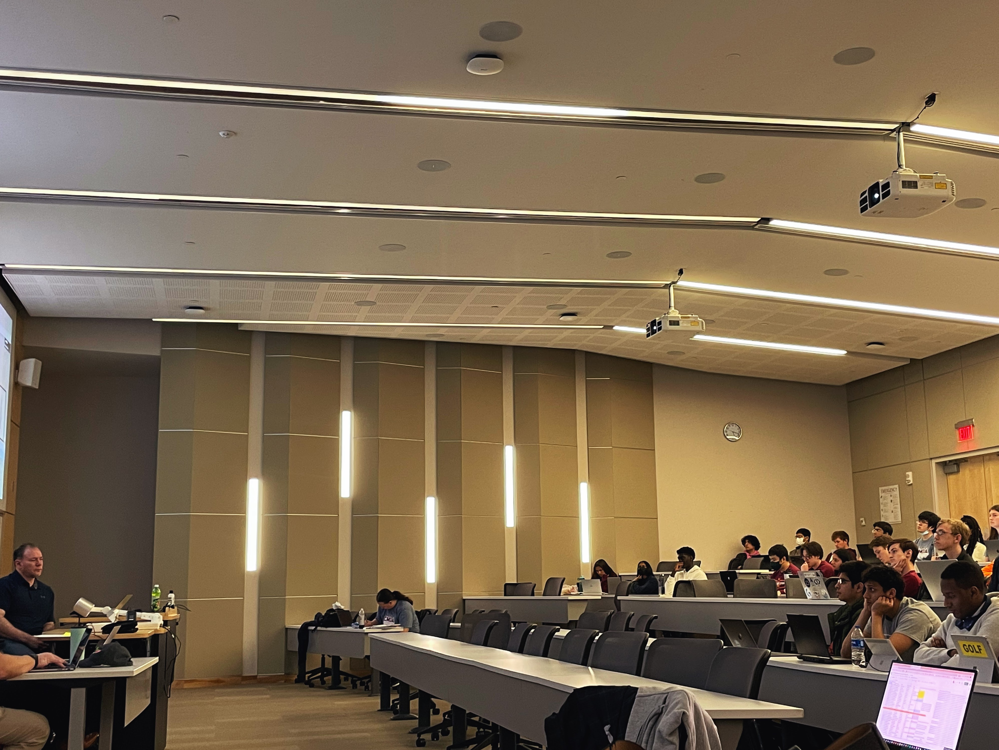

RESEARCH, TOOLS, AND PUBLICATIONS
Coverage of Data Explorer (CODEX)
Coverage of Data Explorer, or CODEX, is a Python package that implements data coverage metrics and algorithms
for artificial intelligence (AI)/machine learning (ML) test and evaluation (T&E) applications. CODEX’s metrics
are based on the theory of combinatorial testing (CT) adapted from software testing to AI/ML T&E with a
data-centric focus.
Released to the public in October 2024, CODEX allows a user to assess study a tabular dataset of their choice
in various of modes of exploration that each examine a different aspect of the its contents on a combinatorial level.
Different modes also leverage additional data such as model performance and split configurations to uncover additional
insights on the datasets and its use in machine learning applications.


Coverage for Detecting Bias in Facial Recognition Datasets
Facial recognition algorithms are known to exhibit varying performance across different subgroups defined by factors like race and gender. These performance differences have been attributed to disparities in the representation of subgroups in the training data. Even when trained on large-scale datasets (i.e., “big data”), these disparities may persist. When the underlying training data is biased, the trained model is likely to be biased as well. Biased facial recognition models may be unreliable for underrepresented groups and lead to real world failures such as incorrect access control decisions in biometric systems or misidentification of individuals. Therefore, methods for assessing the breadth of intersectional contexts covered by datasets during the pre-processing phase before significant resources are invested in training models are essential. This work explores whether frequency coverage can detect data bias and whether coverage correlates with deep learning model performance via experiments on two facial recognition datasets with attributes for gender, race, and age. This work also explores the usefulness of visualizations to practitioners in making decisions about data.
Coverage for Identifying Critical Metadata in Machine Learning Operating Envelopes
Artificial Intelligence (AI) and the subfield machine learning (ML) deployed in systems with direct impact on human lives necessitates assurance of these systems through rigorous test and evaluation (T&E) methodologies such as those applied to testing software systems. Yet, ML differs from other software in important ways, limiting the unmodified adoption of software T&E approaches. A key difference between software systems that are programmed and ML systems is that ML derives logic by learning from data samples. This data dependence makes T&E of the training data an important part of AI testing. Combinatorial testing (CT) is an approach matured within software testing that has been adapted to measure coverage of the data input space. CT-based metrics and methods facilitate measuring the dimensions of a model’s operating envelope, understanding the input space distance between domains for model transfer, identifying the top information gain data points for fine-tuning a model on a new domain, designing test sets that distinguish a model’s performance on learned domains from its generalization to new domains, and measuring imbalance in training data frequency coverage and determining impact on resulting model performance. The Coverage of Data Explorer (CODEX) tool implements these functionalities for the primary purpose of research experimentation and validation of the methods and metrics. This tool paper describes CODEX’s functionalities and maps them to AI T&E applications as well as gives an overview of the workflow of the tool.
, high skew, GNB_all_mod.png)
Coverage for Identifying Critical Metadata in Machine Learning Operating Envelopes
Specifying the conditions under which a machine learning (ML) model was trained is crucial to defining the operating envelope which in turn is important for understanding where the model has known and unknown performance. Metrics such as combinatorial coverage applied over metadata features provide a mechanism for defining the envelope for computer vision algorithms, but not all metadata features impact performance. In this work, we propose Systematic Inclusion & Exclusion, an experimental framework that draws on practices from combinatorial interaction testing and design of experiments to identify the critical metadata features that define the dimensions of the operating envelope. A data splitting algorithm to construct training and test sets for a collection of models is developed to implement the framework. The framework is demonstrated on an open-source dataset and learning algorithm, and future directions and improvements are suggested.

Transfer Learning in GAN Training
Training effective generative adversarial networks (GANs) from scratch is often a challenge
in terms of training. Not only is the training process costly in time and computational resources,
but datasets of insufficient sizes often encounter training failures.
This project evaluates both the efficacy and efficiency of transfer learning as a viable method
in the realm of generative AI and on limited datasets of images assembled from an open source dataset
such as Instagram. My first publication discusses these findings in the June 2023 edition of the ITEA Journal of
Test and Evaluation.

PROJECTS
Comparing Latent Space Representations of Protein Sequenceing Models
To understand the special relationship between a protein's amino acid
sequence and its function, today's bioengineers have turned to
machine learning approaches to model these structures accurately. While models exhibit strong
predictive power, their weights and outputs lack explainability, including what, if any,
biological semantics are being learned. This project explores
whether or not latent outputs of protein sequences learned by machine learning models
are similar or different.
This CMDA capstone project was conducted under the sponsorship of the National Institute of Standards
and Technology (NIST) and the instruction of Dr. Peter Tonner, Dr. Angie Patterson, and Dr. Fred Faltin.
Students contributing to this project are Brian Lee, Isabelle Fox, Jonathan Jwa and Joseph Wu.

Game of Life using Message Passing Interface
Precise and large-scale simulations have their own trade-off with
computational limits. Such programs can be processed in parallel,
but just how much added benefit is gained by doing so?
In this project for Computer Science Foundations of CMDA (CMDA3634)
at Virginia Tech, I implement and study the benefits of using
parallel computing through scalability studies.

LEADERSHIP
Computational Modeling and Data Analytics Club
Throughout my time at Virginia Tech, I have supported the advancement
of data analysis and data literacy as skills necessary for a world
depending on the techniques that extract insights from that data. One opportunity I saw was to get the CMDA
club restarted. In my two years as president and officer, I attempted
to create new opportunities and spaces for CMDA students to practice
their skills and learn from more experienced individuals in the field.
Data competitions hosted by the club have been the primary way that members were able
to get practical experience working with data outside of the classroom.
The CMDA Club is proud to have hosted fall and American Statistical Association
(ASA) Datafest data competitions. In addition to data competitions, the club has seen
interesting workshops exploring more niche topics in the data science world.

Get in Touch
If you are interested in working with me or want to simply know me better, feel free to reach out!
leebri2n@vt.edu